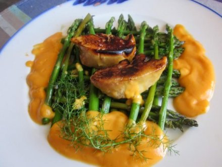
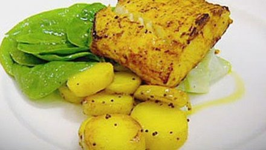
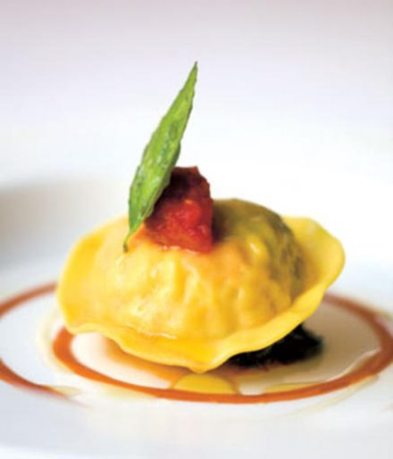

Trabajo de Gordon Ramsay
Mejores Platillos

1. Escalopes cocidos a la vinagreta

2. Mero de carne crocante acompañado con puré de apio y corazones de alcachofa

3. Tortellini de langosta
Reconocimientos de Gordon Ramsay
- Gordon Ramsay ha ganado un máximo de 17 estrellas Michelin
- Condecorado con la Orden del Imperio Británico (2006)
- Actualmente presenta Hell's Kitchen y la versión estadounidense de MasterChef
Datos estadísticos
| Categoría | Estadística |
|---|---|
| Visitas al sitio web | 500 |
| Seguidores en redes sociales | 14.2M |
| Recetas publicadas | 120 |
| Estrellas Michelin | 14 |
| Fuente: Gordon Ramsay | |